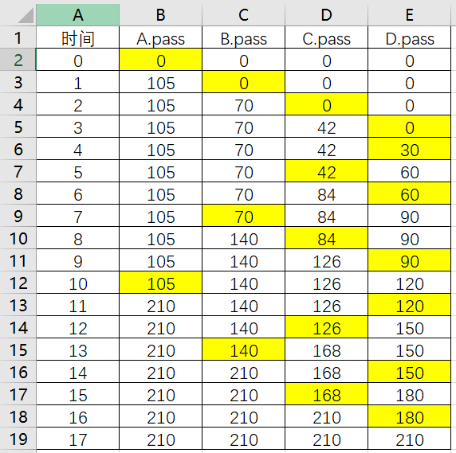
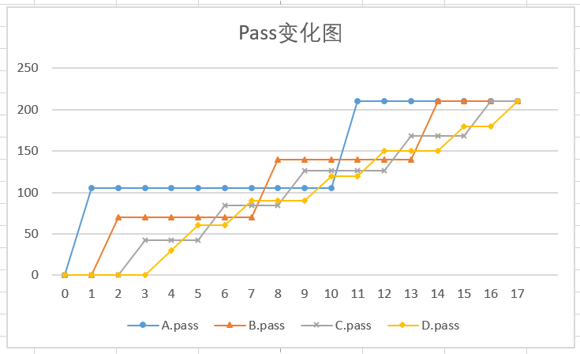

一 信号（12分）
在Linux/Unix中，一个用户从shell中执行了一个运行时间较长且不知何时能够结束的程序，Linux/UNIX可以让用户根据个人需求随时通过敲击Ctrl-C组合键来终止这个程序的执行。请回答如下问题。要求设计应该具有通用性，列出的设计实现不超过6点，每点不超过 4行。问题的执行流程描述不超过8行。
- 如果要在ucore中实现Linux/UNIX同样的功能，请问应该如何修改ucore来支持此功能？
- uCore的shell也是一个程序，我们希望避免这个shell在执行中被用户敲入的Ctrl-C所终止，请问在保证1的要求前提下，如何修改ucore和shell来支持此功能？
- 说明在你的设计下，shell和某一可被终止程序在执行过程中，用户敲击Ctrl-C后，uCore和shell的执行流程。
- 很显然，应该通过信号机制来实现相应的功能。我觉得可以修改编译器，使得编译时为每个程序自动加入信号处理例程，进程启动时将相应的信号处理函数注册到内核，发生SIGKILL（Ctrl+C组合）时将信号分发给进程，进程执行信号处理例程并退出。
- shell可以在程序中屏蔽Ctrl+C信号
- ucore和shell的执行流程：
- ucore接收到键盘中断
- ucore识别出按下的键是Ctrl+C，发送信号
- 中断返回时检查到进程有未处理的信号，转入信号处理（这一步我们大概没有细讲……总之就是进入了正在执行的程序的信号处理例程）
- 信号处理例程使进程退出
- shell继续wait
二 IPC机制
在具备了执行用户态进程的能力之后，uCore要为这些进程提供的一个重要服务，是用户进程之间的消息传递机制（Inter-Process Communication，简写为 IPC）。现在，我们要为uCore实现以下两个系统调用，以实现一种同步的IPC机制（暂不考虑超时等功能）：
int sys_send_event(int pid, int event);- 参数：
- pid - 该消息的目标进程的进程号；
- 参数：
- event – 消息内容，用一个整型表示。
- 返回值：消息成功发送时，返回0；否则，返回相应的错误代码。
int sys_recv_event(int *pid, int *event);- 参数：
- pid - 函数返回时，
*pid保存发出消息的进程的进程号，可以为NULL； - event – 函数返回时，
*event保存消息内容，可以为NULL。
- pid - 函数返回时，
- 返回值：消息成功接收时，返回 0；否则，返回相应的错误代码。
- 参数：
（1）
以下是一个基于上述IPC机制求质数的用户程序：
1 | #include <ulib.h> |
简述这个程序是如何判断并输出前五个质数的。
主进程（称为P1）首先fork出一个子进程，子进程开始执行primeproc()函数（称为P2）。主进程从i = 2开始不断向P1发送内容为i的自然数，直到发送不成功为止。
P1进程不断循环：
- 接收P0发送的消息，将这个整数保存下来，作为质数
this - 不断接收P0发送的消息，保存为
num；如果接收不成功，退出并打印信息 - 若
num可以被this整除，显然num不是质数，跳出此次循环，继续等待消息
。。。不会了
学长答案说：
每个进程是一个输出一个素数，负责检验传进来的数是否整除这个素数，如果都过了在新建一个进程
我觉得从理论上来说确实是这样，但是不够详细。
（2）
给出一种基于等待队列的上述IPC机制的实现方案。
在我的妄想中这个是这样实现的：
- 建立两个等待队列：发送等待队列和接收等待队列
- 当进程发送消息时，检查目标进程是否在接收等待队列中，如果不在，则加入发送等待队列；如果在，则将目标进程取出，发送对应的消息
- 当进程接收消息时，检查发送等待队列中是否有进程发送的目标是它，如果有，则将该进程取出，接收对应的消息；否则加入接收等待队列
三 ucore中的信号量实现（10分）
在uCore中，信号量的定义如下
1 | typedef struct { |
（1）
补全程序中的空行________。
sem->value++;
（2）
信号量的value值>0时，表示________的数量；value值<0时，表示________的数量。
- 剩余资源
- 等待队列中进程
（3）
local_intr_save和local_intr_restore这两个函数的功能分别是什么？为什么要调用这两个函数？
关中断和开中断；为了保证执行过程的原子性。
四 学生看MOOC同步问题（15分）
假设一个MOOC网站有1、2、3三种不同的课程视频可由学生选择学习，网站播放课程视频的规则为：
- 任一时刻最多只能播放一种课程视频，正在播放的课程视频是自动循环播放的，最后一个学生主动离开时结束当前课程视频的播放；
- 选择当前正在播放的课程视频的学生可立即进入播放页面，允许同时有多位选择同一种课程视频的学生观看，同时观看的学生数量不受限制；
- 等待观看其它课程视频的学生按到达顺序排队，当一种新的课程视频开始放映时，所有等待观看该课程视频的学生可依次序进入播放页面同时观看。
用一个进程代表一个学生，要求：用信号量的P、V操作实现上述规则，并给出信号量的
定义和初始值。
我认为这个问题有点像读者-写者问题。下面是我的实现方法（虽然我也觉得有一些问题）：
1 | #define COURSE 3 |
学长的实现是这样的，说实话，我也不是很明白：
1 | avaid=1 |
五 Stride调度算法（12分）
在lab6中，我们实现了Stride Scheduling调度算法，并声称它对“进程的调度次数正比于其优先级”。对于优先级为2、3、5、7的4个进程，选取210为MAX_STRIDE，则：
- 简要描述Stride Scheduling调度算法。
- 四个进程的步长分别为：、、、。
- 假设四个进程的初始stride值均为0，证明：总有一个时刻，四个进程的stride值都是210，且此时四个进程被调度的次数正比于其优先级。
Stride调度算法：
- 每个进程有一个priority（优先级），pass和stride
- stride = BigStride / priority
- 每次调度时选择pass值最小的进程，更新该进程的pass：pass += stride
步长分别为105、70、42和30。
下列模拟过程假设在进程的pass值相等时，选择进程编号最小的执行。


此时，A被调度了2次，B被调度了3次，C被调度了5次，D被调度了7次，恰好与优先级成正比。之所以会这么规整，主要还是因为BigStride的值能够正好被各个优先级的值整除。
六 银行家算法（12分）
死锁是操作系统中资源共享时面临的一个难题。请回答下列与死锁相关的问题。
（1）
设系统中有下述解决死锁的方法：
- 银行家算法；
- 检测死锁，终止处于死锁状态的进程，释放该进程占有的资源；
- 资源预分配。
简述哪种办法允许最大的并发性，即哪种办法允许更多的进程无等待地向前推进？请按“并发性”从大到小对上述三种办法进行排序。
排序：2 > 1 > 3
原因：
- 银行家算法每满足一个资源请求时都会进行安全状态检查。因为安全状态中实际上包含了一部分不会发生死锁的状态，所以它会拒绝一些本来可以接受的请求，所以降低了一点并发性。
- 显然在这种做法下所有进程都可以无等待地推进，直到真的出现了死锁再进行处理。
- 直觉上来说，资源预分配的并发性比银行家算法更低，因为银行家算法至少保留了一些动态性能，而资源预分配完全牺牲了动态性。
（2）
假设一个使用银行家算法的系统，当前有5个进程P0, P1, P2, P3, P4，系统中有三类资源A、B、C，假设在某时刻有如下状态：
Allocation矩阵：
| 进程 | A | B | C |
|---|---|---|---|
| P0 | 0 | 0 | 3 |
| P1 | 1 | 0 | 0 |
| P2 | 1 | 3 | 5 |
| P3 | 0 | 0 | 2 |
| P4 | 0 | 0 | 1 |
Max矩阵：
| 进程 | A | B | C |
|---|---|---|---|
| P0 | 0 | 0 | 4 |
| P1 | 1 | 7 | 5 |
| P2 | 2 | 3 | 5 |
| P3 | 0 | 6 | 4 |
| P4 | 0 | 6 | 5 |
Available向量：[1, 4, 0]
请问当前系统是否处于安全状态？如果系统中的可利用资源为（0, 6, 2），系统是否安全？如果系统处在安全状态，请给出安全序列；如果系统处在非安全状态，请简要说明原因。
首先计算Need矩阵：Need = Max - Allocation
| 进程 | A | B | C |
|---|---|---|---|
| P0 | 0 | 0 | 1 |
| P1 | 0 | 7 | 5 |
| P2 | 1 | 0 | 0 |
| P3 | 0 | 6 | 2 |
| P4 | 0 | 6 | 4 |
然后进行安全状态检测：
- Finish[P2] = false，Need[P2] <= Available；于是释放P2资源，Available += [1, 3, 5] = [2, 7, 5]，Finish[P2] = true
- Finish[P0] = false，Need[P0] <= Available；于是释放P0资源，Available += [0, 0, 3] = [2, 7, 8]，Finish[P0] = true
- Finish[P1] = false，Need[P1] <= Available；于是释放P1资源，Available += [1, 0, 0] = [3, 7, 8]，Finish[P1] = true
- Finish[P3] = false，Need[P3] <= Available；于是释放P3资源，Available += [0, 0, 2] = [3, 7, 10]，Finish[P3] = true
- Finish[P4] = false，Need[P4] <= Available；于是释放P4资源，Available += [0, 0, 1] = [3, 7, 11]，Finish[P4] = true
- 发现系统处于安全状态。
如果将Available向量修改为[0, 6, 2]，重新进行安全状态检测：
- Finish[P0] = false，Need[P0] <= Available；于是释放P0资源，Available += [0, 0, 3] = [0, 6, 5]，Finish[P0] = true
- Finish[P3] = false，Need[P3] <= Available；于是释放P3资源，Available += [0, 0, 2] = [0, 6, 7]，Finish[P3] = true
- Finish[P4] = false，Need[P4] <= Available；于是释放P4资源，Available += [0, 0, 1] = [0, 6, 5]，Finish[P4] = true
- 此时找不到满足条件的进程了，因此系统处于不安全状态。
七 SFS文件系统（12分）
uCore实现了一个简单的文件系统Simple FS，假设该文件系统现已经装载到一个硬盘中（disk0），该硬盘的大小为20M，目前有三个文件A.txt，B.txt和C.txt存放在该硬盘中，三个文件的大小分别是48K，1M和4M。
（1）
简要描述SFS文件系统中文件数据的组织结构（即：SFS文件的数据的存放位置组织方式）。
以下答案来自os_course_exercise_library，总之这个仓库让我感觉十分惊诧。
一个superblock维护基本信息（1’），
多个freemap（数量由分区大小确定，1’），
一个根目录inode（1’）；
目录和文件均由一个inode和具体数据块组成，其中inode包含文件的基本属性、12个直接索引和一级/二级索引表的块地址（1’），
目录的数据块中存放（文件名 、inode地址）的数组（1’），
文件的数据块中存放文件的具体内容（1’）。
呃，有标答了哦。不过，要是我自己来回答，会这样说：
……然后就懒得说了，反正我还没做完Lab8，标答比我能总结出来的东西还是要强的。
（2）
请根据Simple FS的设计实现情况，画出该文件系统当前在disk0上的布局情况，需要给出相应结构的名称和起始块号。
答案来源同上。
（除了0、1、2以外，其它块地址均可变，言之有理即可） （2分）
0 superblock
1 根目录inode
2 freemap（640K，只需要1块）
3 根目录的数据块（包含A.txt、B.txt、C.txt的inode的地址） （1分）
4 A.txt的inode（包含12个直接索引块的地址）
5-16 A.txt的数据块 （2分）
17 B.txt的inode（包含12个直接索引块和1个一级间接索引）
18-29 B.txt的直接索引数据
30 B.txt的一级间接索引（包含244个数据块地址）
31-274 B.txt的一级间接索引块 （1分）
275 C.txt的inode（包含12个直接索引块和1个一级间接索引）
276-287 C.txt的一级间接索引块
288 C.txt的一级间接索引（包含1012个数据块地址）
289-1300 C.txt的一级间接索引块
这个硬盘的块大小是4KB（虽然不知道为什么），因此整个硬盘共有5120块，因此freemap的大小应该为5Kbit。第0块是superblock，第1块是根目录inode，第2块是freemap，用1块就够了。后面就开始链式存储具体的文件和目录内容。
- 3：根目录的数据块
- 4：A的inode。因为A的大小为48KB，因此12个直接索引块恰好能够装下，不需要一级索引。
- 5-16：A的数据块
- 17：B的inode。因为B的大小为1M，所以需要12个直接索引、1个一级索引块和244个间接索引。
- 18-29：B的直接索引数据块
- 30：B的一级索引块
- 31-274：B的间接索引数据块
- 275：C的inode。因为C的大小为4M，所以需要12个直接索引、1个一级索引块和1012个间接索引。
- 276-287：C的直接索引数据块
- 288：C的一级索引块
- 289-1300：C的间接索引数据块
八 VFS文件系统（12分）
uCore的文件管理主要由以下四个部分组成：通用文件系统访问接口层，文件系统抽象层(VFS)，具体文件系统层以及外设接口层，其中VFS层的作用是用来管理不同的文件系统并向上提供一致的接口给内核其他部分访问。在ucore中我们已经实现了一个具体的文件系统：Simple FS，并将该文件系统装载到了disk0上，假设ucore又实现了一个文件系统FAT32，并将这个新的文件系统装载到了disk1上。
（1）
请简单描述一下如何修改VFS层的数据结构使其可以有效的管理上述已安装的具体文件系统。涉及VFS层的数据结构如下：
1 | struct file { |
1 | struct inode { |
1 | struct fs { |
1 | struct inode_ops { |
对VFS必要的修改并不多，原因很简单：这是VFS。需要在以下位置添加必要信息：
- 在
inode.in_info对应的匿名union中添加struct fat32_inode __fat32_inode_info; - 在
inode.in_type对应的匿名enum中添加inode_type_fat32_inode_info, - 在
fs.fs_info对应的匿名union中添加struct fat32_fs __fat32_info; - 在
fs.fs_type对应的匿名enum中添加fs_type_fat32_info,
（3）
两个具体文件系统均已实现了对数据文件的4种基本操作。现在有某个用户态进程执行了一个copy(source_path, dest_path, ...)函数，该函数是把disk1根目录下的一个文件A.txt拷贝到了disk0的根目录下（不用考虑文件的大小），请结合ucore中对数据文件的操作流程描述一下这个函数的执行过程。
以下内容来自学长答案。
- 根据源文件目录调用
vop_lookup查找文件的inode，这将调用FAT32的查找实现 - 根据目的文件路径调用
vop_lookup查找文件的inode，这将调用SFS的查找实现 - 判断合法性
- 可能需要创建文件
- open文件
- 建立buffer，对A调用
vop_read，对B调用vop_write - 关闭文件